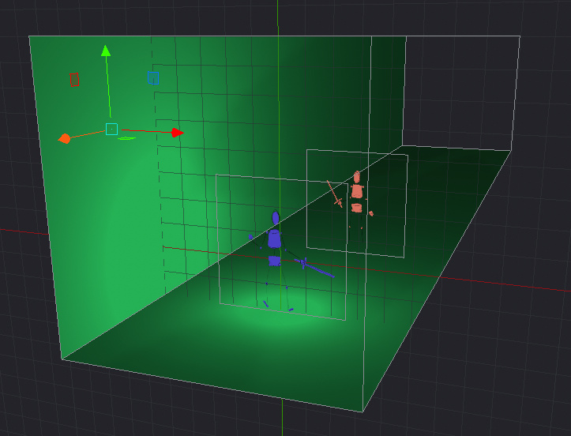
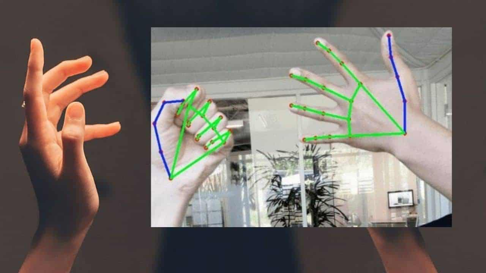

El apartado más curioso de la realidad aumentada es... ¿Cómo funciona?... ¿Cómo se hacen esos modelos interactivos?... etc.
Vamos a responder a todas esas preguntas ahora mismo.
El apartado más curioso de la realidad aumentada es... ¿Cómo funciona?... ¿Cómo se hacen esos modelos interactivos?... etc.
Vamos a responder a todas esas preguntas ahora mismo.
La realidad aumentada se encarga de combinar nuestra visión, a través de una cámara que reciba las imágenes del plano real, con los objetos creados virtualmente por un software.
Los software que utilizan realidad aumentada están constantemente realizando los siguientes pasos:
Se utiliza para renderizar los contenidos 3D que se muestran con la tecnología AR.
El renderizado consiste en el proceso de interpretación de la escena en 3D por parte del dispositivo.
Aquí se miden todos los parámetros de los elementos gráficos (tamaño, color, forma, etc.).

Se aplican muchas técnicas diferentes con respecto a la visión artificial en la tecnología AR, principalmente aquellas relacionadas con el tracking (permite definir a un objeto real y seguir su movimiento).
Las técnicas más novedosas utilizan sensores activos basados en luz estructurada.
Para que la experiencia sea realmente inmersiva debe funcionar a un mínimo de 60 imágenes por segundo, lo que hace a la tecnología AR muy exigente.

Completa el siguiente texto.
Obra publicada con Licencia Creative Commons Reconocimiento Compartir igual 4.0